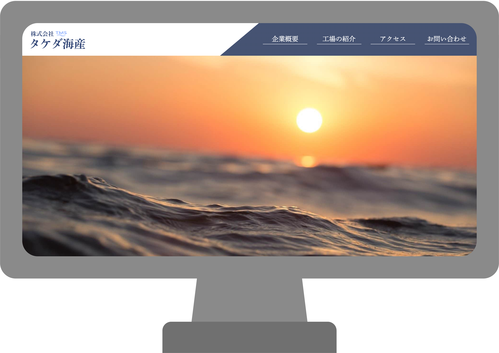

「タケダ海産」
＜作品概要＞
知人の会社のサイトのコーディングをしました。
デザインは職業訓練の友人にしてもらっています。
現在実装に向け調整中です。
全７P。レスポンシブ対応有り
＜制作時間＞
１週間
＜コンセプト＞
BtoBサイトなので、見やすく、分かりやすいサイトにする。
＜制作ポイント＞
Gulp,Github,Sass,FLOCSS,jQueryを使用しコーディングをしました。
Sassではいままで@importを使っていましたが、サポート終了に伴い今回は@useを使いました。
TOPページの事業紹介の背景はbackground-imageで実装しており、横幅に合わせて高さが変わる設定のためsectionの高さがなくならないよう、calc関数を使い高さを常に一定数の幅になるようにしています。
なるべくcssの記述が少なくなるよう、共通部分を抜き出し、パーツ化し、スタイルを再利用しやすいcss設計を心掛けました。